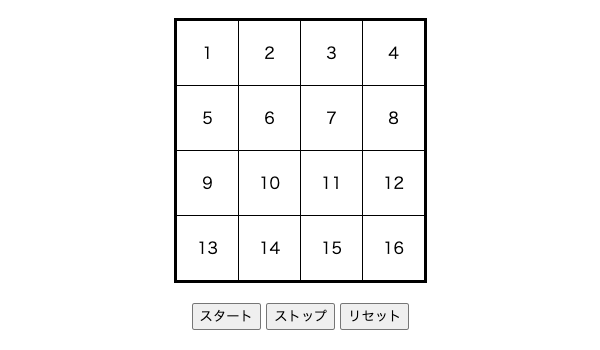
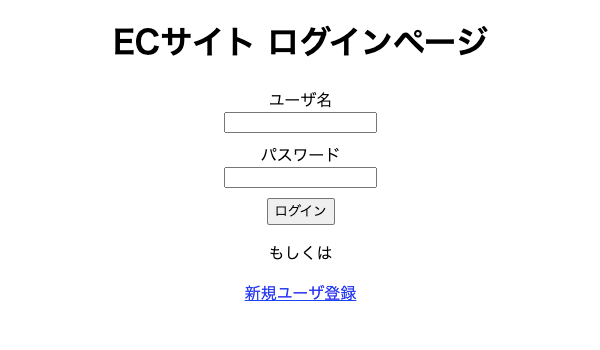
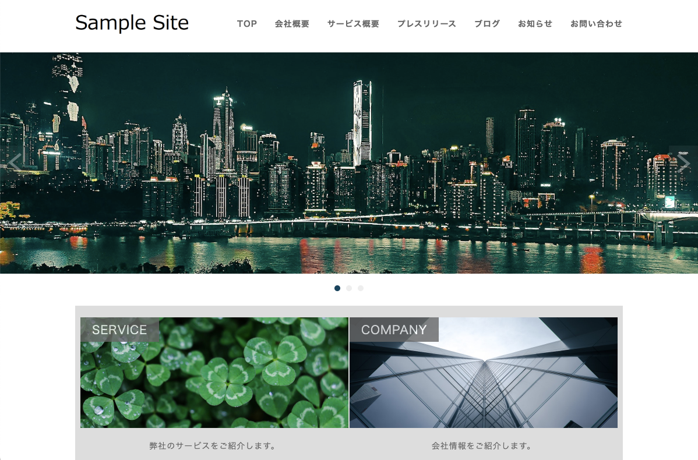

自己紹介
Self introduce
私の名前は菅野一歩です。福島県出身で、現在はディーキャリアITエキスパート中野オフィスにて、プログラミングの学習に取り組んでいます。
どうぞよろしくお願いいたします。

スキル
Skills
実装サンプル
sample
画像ギャラリー

宇宙飛行士と月
幻想的な色彩の月と雲の前に、宇宙飛行士が立っています。

明日と石
積み重ねられた石を、朝日が照らしています。

鏡のような湖
空と海がどちらかわからなくなるような、鏡のような湖です。

ハートの風船
青空をバックに、たくさんの色とりどりのハートの風船が浮いています。
訓練課題
JavaScript : ルーレット
JQueryを使用して作成した、4x4マスのうちランダムの1マスを選択するルーレットです。停止マスは分かりやすく色付けされます。 1回選択されたマスはルーレットから除外され、16回実行するとリセット以外選択できなくなります。 リセットはルーレット実行前・実行中問わず実行できます。
PHP/MySQL : ECサイト
商品をカートに入れて購入する機能、商品の在庫管理を行う機能、ユーザのログイン・アカウント登録機能を備える通販サイトのサンプルです。 スタイルシートの適用、支払総額の表示、商品データ削除時にディレクトリに保存された画像ファイルを削除する機能のほか、 重複ログインやリロードによる入力フォーム内容の多重送信を防ぐ構造になっております。
WordPress
WordPressを使用して作成した企業Webサイトのサンプルです。 あらかじめ用意された静的なWebサイトをWordPressテーマとして作り替えて、外観を実装しています。